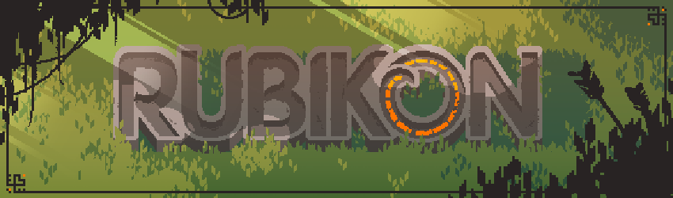

I am a programmer with a weakness for video games.
I started playing them in my childhood, and ever since then dreamed about making my own games.
In school I picked a programming class, which sparked my interest in programming in general, so I kept programming throughout the rest of school.
Shortly after I started studying International Media and Computing.
There I finally got to dive deeper into game development, and created my first game projects together with other programmers, artists and designers.
The studies also included a mandatory internship abroad, which I completed at a nice little gamestudio in Copenhagen. It was a great experience to work on a commercial product integrated in a team, learning the ins and outs of professional game making.
After my thesis, I found a job in a small company in Berlin which had specialised on VR and AR applications. I helped figure out interaction and UX with the Hololens, Vive and Rift in Unity. Exciting stuff!
When they had to scale back, I moved on to waza!Games, a small studio specialized on serious games.
Here I worked on various projects and learned a lot about Unity, and some online features with gamespark.
Sadly waza! also decided to scale back after a while, which left me with the opportunity to change course and dive into embedded development.
Afer almost two years in this field, I feel drawn back to games. I miss the unique tasks and amazing people that come with the trade!
If you are searching for a gamedev with a lot of passion for their work, make sure to contact me!
Projects
Sanifighter - Jetzt Wird Zurückgeschlagen!
Sanifighter was a fun albeit short project I worked on with waza!Games for the German satire group Bohemian Browser Ballet.
I did all the coding on it while my two team mates took care of asset creation, game and level design.
It is a beat-em-up type 2D game with a retro look about an EMT fighting of hordes of annoying gawkers, hooligans and tourists while keeping his patient alive by performing CPR on beat to the music.
You can play it in your browser and get the apps here. (https broke by now)
Moving Tomorrow 1 & 2
Moving Tomorrow is an award-winning intercultural serious game - what a mouthful!
These two games are point and click adventures used by the ESCP Business School to communicate intercultural management.
I got to work on these two games mainly as a QA-manager, supervising several working students as testers.
Some bugfixing also needed to be done which I did using Adventure Creator, a unity plugin for point and click games that Moving Tomorrow was built in.
It scored a nomination at the 2019 DCP (German Computer Games Award) and a few other shiny badges you can read about here.
Carlsen Clever
Clever is a project by the German book publisher Carlsen, that combines learning-books for children with companion apps.
So far three apps and corresponding books have been published by Carlsen. The two first two that I did see during development seem to be unavailable by now.
I did find an article about them here (link in German) (link defunct) though.
I was the only developer on this project. My main focus was to supply Carlsen with a solid foundation, that their in-house team could build upon later.
Future apps of the 'Clever' series will be created by the publisher themselves, using the framework I provided.
I worked tightly together with the project lead, constantly exchanging ideas and feedback. They were also my connection to the designers and authors, who came up with the artstyle, games and other content.
Rubikon

This project is currently dormant, but I'm sure we'll pick it up again some time.. we always do. :)
Rubikon is a Sandbox RPG, developed by Tony Ziemke, Torben Boekemeyer and myself in our spare time.
I worked on the character controller, parts of the animation system as well as pathfinding and NPC logic.
Our goal with this game is to create a world in a dynamic conflict, that wages on whether the player chooses to side with one of the factions or not.
The project is currently on hiatus due to all of us committing to other responsibilities. You can see some of our progress here.
Soulspark Battlecards - RPG
Soulspark is a realtime battlecard game in which the player follows a group of heroes through their quest.
It features fast paced strategic battles with a large variety of enemies and spells.
The difference to other card games is the realtime aspect. Learn more about the game here. (https broke)
I worked on Soulspark during my internship at CopenhagenCreators, and was mainly tasked with bugfixes, polishing and final features.
Besides that I was responsible for the audio options as well as the correct handling of audio effects and background music.
The team consisted of 14 people.
HCA - The ugly Prince Duckling
HCA was my main project at CopenhagenCreators. Its goal was to port a point and click adventure from 2008, made with Ogre3D to Unity3D.
This required a lot of testing and bugfixing, as well as introducing new systems ontop of the existing foundation.
I was also tasked with translating C++ scripts into C# and get them to run in our new implementation of the game.
There were some quirks that needed creative solutions due to the difference of the two engines and languages, but it was always fun to figure them out.
The team at the times consisted of 3 programmers, one of which led the development.
Repeat
Repeat was the first game I worked on.
It was a university project in collaboration with a group of game design students.
It is a rythm based game for Android in which the player controls a circle and tries to collect as many points as possible.
One requirement was to use some sort of extraordinary controls, so it is controlled through a mix of motion and touch controls.
The easiest way to do this is to hold the device in one hand, steering the circle while activating special objects through tapping or swiping with the other.
I worked on the project as one of two programmers together with three game designers.
Even though communication between designers and programmers is not always easy, the teamwork was great and gave me a better understanding of how a multidisciplinary team can work and communicate together smoothly.
Feel free to get the .apk here.
Keep in mind, this is quite old, so newer devices may or may not be able to play it.
Bunny in a Hurry
This game was a fun little prototype, created entirely during the Nordic Game Jam 2016.
Its a morbid sidescroller/platformer where the player has to reach the end of the level as fast as possible to not bleed out in the process.
With a team of five programmers, two artists and a severe lack of time Bunny in a Hurry is obviously missing a lot of polish and is unfinished, but it is playable.
The Jam and our resulting project were stressful but an amazing experience nonetheless.
If you feel like giving it a try, you can find it here on itch.io.
Other Jams
Feel free to ask me about some other gamejams or side projects, if you're interested.
There have been a bunch, but not all of them are in a playable or presentable state at this point.
I love the concept of jams, life just seems to never make enough space for them anymore.
There are a few more on my itch for you to check out!